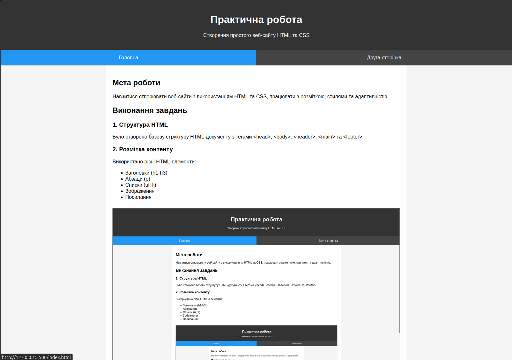

Мета роботи
Навчити студентів базовим принципам створення веб-сайту з використанням HTML та CSS, ознайомити з основами розмітки та стилізації елементів
Виконання завдань
1. Структура HTML
Було створено базову структуру HTML-документу з тегами <head>, <body>, <header>, <main>, <footer>, <section> та <nav>
2. Розмітка контенту
Використано різні HTML-елементи:
- Заголовки (h1-h3)
- Абзаци (p)
- Списки (ul, li)
- Зображення
- Посилання

3. CSS стилі
Стилі винесені в окремий файл styles.css. Використано кольори, шрифти, відступи та hover-ефекти
4. Розташування елементів
Для розташування використано Flexbox, що дозволяє гнучко вирівнювати елементи
5. Адаптивність
Додано media queries для коректного відображення на мобільних пристроях
6. Навігація
Реалізовано меню з підсвічуванням активної сторінки
7. Валідація
Код перевірено на валідність та протестовано в браузері. Використано розширення Prettier в VS Code для автоформатування коду